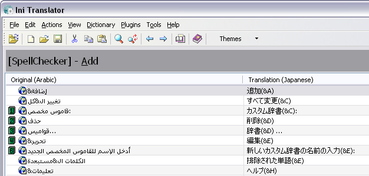

Bookmarks
Use bookmarks to set a marker on a line in the listview and quickly jump to that
line from anywhere in the file by pressing a shortcut key. When a bookmark is set, a
small numbered icon is displayed to the left of the bookmarked line. This image shows some
lines bookmarked:

- To add a bookmark, press Ctrl+Shift and a
number between 0 to 9
- To remove a bookmark, select the line where the bookmark is
located (or press Ctrl and the number) and press the
Ctrl+Shift and the number again. If yo don't want to move to the bookmark to
delte it, press Ctrl+Shift+number twice.
-
Move a bookmark simply by pressing Ctrl+Shift
and the number on another line
- To jump to a bookmark, press Ctrl and a number
between 0 to 9
- Bookmark are not removed when you load new file(s) unless the bookmark is located beyond
the last row in the loaded files
- Bookmarks are not persisted (i.e they are not restored the next time you run the program)
- If you have more than one bookmark on the same line, only the highest numbered bookmark
is visible. All the others are still available, though.
- Bookmarks are anchored to the row, not the content of the row